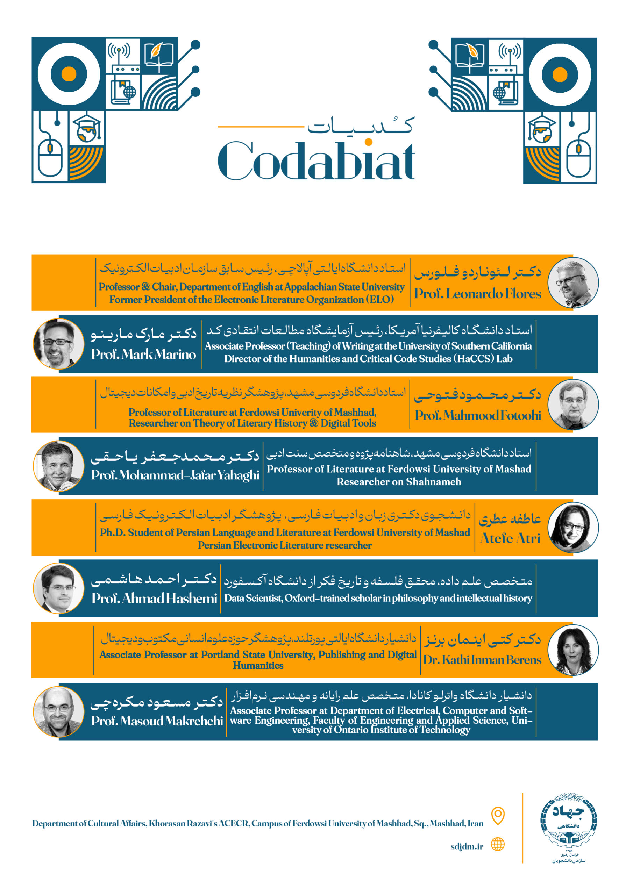

Presentation: How to Become a Hackeur
I have created this presentation for an event titled CodAbiat on October 19, 2023 in Ferdowsi University of Mashhad in Iran, for which I am grateful to have been invited to share some of my work in the field. Inspired by the name of the event– CodAbi...